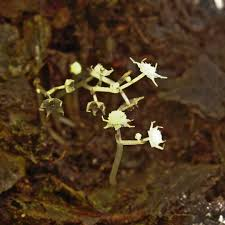

| Es una flor pequeña, de color blanco translúcido, que carece de hojas y tiene un tallo filamentoso y delgado. A diferencia de la mayoría de las angiospermas, la Lacandonia schismatica presenta una inversión en la disposición de sus órganos reproductores, con los estambres dentro de los carpelos. Es una planta mico-heterótrofa, lo que implica que depende de hongos endofíticos (que viven dentro de sus raíces y tallos) para obtener nutrientes. |
 |
| Es una planta endémica de México que habita en la Selva Lacandona ubicada en el estado de Chiapas, específicamente en zonas húmedas y sombreadas, entre la hojarasca del bosque lluvioso, es el único lugar conocido donde se encuentra esta especie, Prefiere suelos con alta humedad y materia orgánica en descomposición. |
- Fase Saprófita/Mico-heterótrofa: Lacandonia schismatica crece en el suelo de la selva, obteniendo nutrientes de la materia orgánica en descomposición y de hongos endofíticos que habitan en sus raíces, rizomas y tallos.
- Floración: Las flores, pequeñas y blancas, aparecen entre noviembre y diciembre. Son hermafroditas y presentan una disposición floral única.
- Reproducción: La autofecundación ocurre dentro de la flor, antes de que se abra (cleistogamia).
- Desarrollo del fruto: Al ser una angiosperma, el fruto se desarrollará a partir del ovario fertilizado, conteniendo las semillas.
- Dispersión de semillas: Como en otras plantas, las semillas son dispersadas por el viento, animales u otros mecanismos.
- Germinación: No se encontraron detalles específicos. Sin embargo, se puede asumir que las semillas germinarán cuando encuentren las condiciones adecuadas (humedad, temperatura, etc.).
|